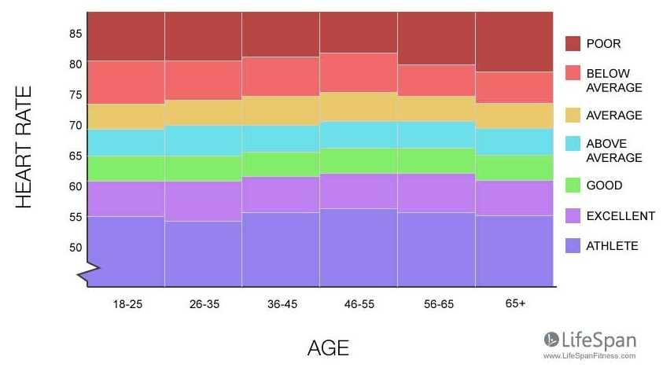

Relax and feel your heartbeats.
It can be found at your wrist, neck or right on your chest.
When ready, tap the screen everytime you feel the beat.
The result will be shown after 10 taps.
Your heart beats at rate
(beats per minute)

REDO THE TEST